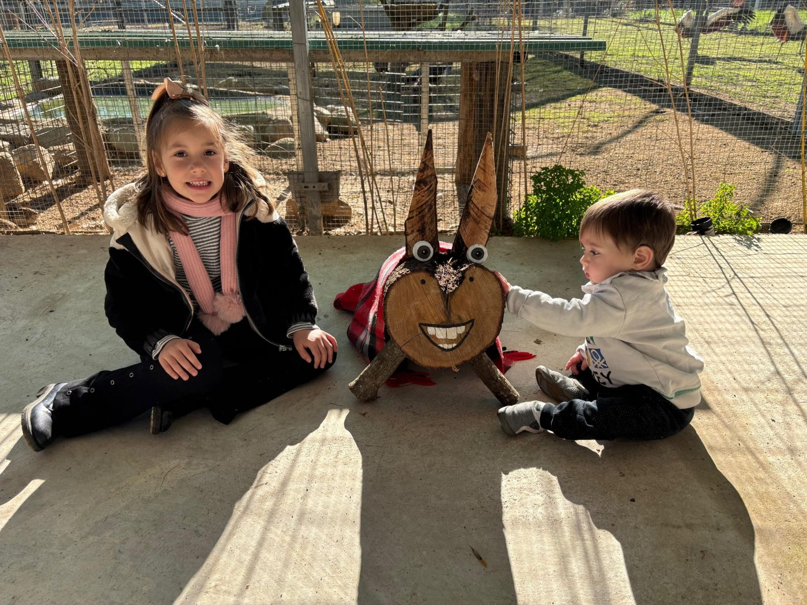
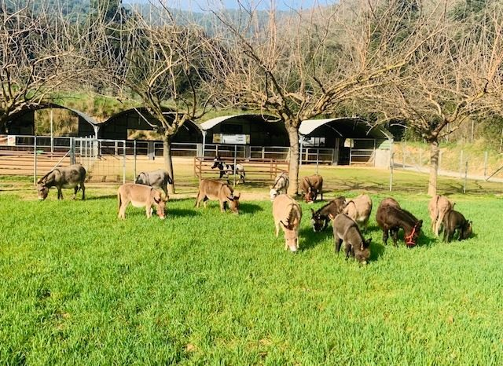
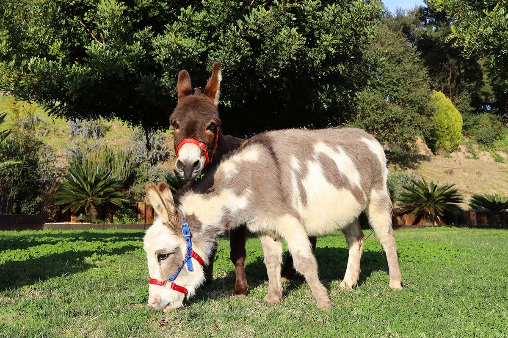
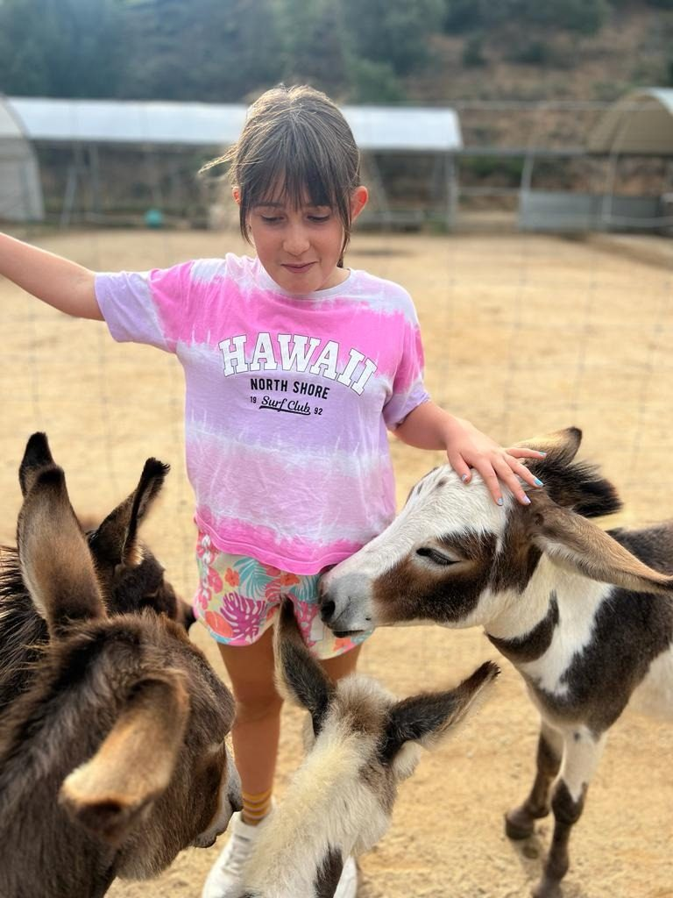

Can Ferrer · Arenys de Munt
La màgia del Nadal entre rucs miniatura. 6, 7, 8 i 19 de desembre, a les 11:00 i a les 15:00, amb places limitades.
El Petit Refugi
Viu la màgia del Nadal amb l'arribada de l'autèntic Burro Tió d'El Petit Refugi: una tradició entranyable, respectuosa amb els animals i enamorada del contacte amb la natura. Et convidem a passar un matí o una tarda inoblidables al nostre refugi en companyia de la Kitty, la Kika, la Pepa, la Nina, el Foc, el Leo i tota la burrada en miniatura.

Galeria


Preguntes freqüents
El 6, 7, 8 i 19 de desembre, amb dos passis cada dia: a les 11:00 i a les 15:00. L'activitat dura 2 hores.
28 € per infant. Els adults acompanyen sense pagar i els menors de 2 anys tampoc paguen.
Sí, les places són limitades. Reserva per WhatsApp al +34 648 911 106, per correu o des de la pàgina de reserves.
Sí, de qualsevol edat, sempre acompanyats d'un adult. Els menors de 2 anys no paguen.
Busquem plegats una altra data, sense cap cost. L'import no es retorna, però la visita no es perd.
Sí. L'accés està adaptat per a cadires de rodes i es pot venir amb cotxet.
Es pot aparcar al costat de la finca, a la Carretera de Lourdes (C/ Subirans), Arenys de Munt.
Els més propers són al Parc de Lourdes, a 5 minuts a peu.
Vine a conèixer-nos
Carretera de Lourdes (C/ Subirans) · Arenys de Munt, Barcelona
Reserva araVeure tarifes